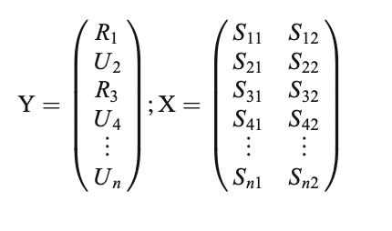

Multi-Time Point Analysis (MTPA)
There are a wide-variety of options when deciding on an appropriate analysis strategy to use. It is almost impossible to cover every method. When reviewing papers, I feel bad because I inevitable bring up methods the authors did not include. This blog post adds to the already complicated landscape of time course analysis and add yet another tool to the pupillometry toolbox.
I mostly do these blogs as an aid to help me better understand a method. I also hope it will help others.
To demonstrate MTPA I am going to use a simple example from data I collected as a postdoc at the University of Iowa. In this experiment, individuals (N=31) heard normal and 6-channel vocoded speech tokens (single words) and had to click on the correct picture. The vocoded condition should be harder, and in the figure below, you can see that it is–larger pupil size throughout the trial. Commonly, we would test significance by using a mass univariate approach (e.g., t-tests at each time point). Below we fit the time course data using Dale Barr’s clusterperm package with no corrections (with corrections nothing is significant). We see that there is a significant difference between the conditions that emerges starting around 800 ms and ends around 1900 ms. Using MTPA would we observe something different?
library(pacman)
devtools::install_github("dalejbarr/clusterperm")
pacman::p_load(ERP, mnormt, fdrtool,
tidyverse, gridExtra, crayon,
boot, reshape2, ggthemes,
devtools,randomForest,leaps, pROC, tidyverse, here, gazer, clusterperm)

vo_mu <- aov_by_bin(timebins1, timebins, # clusterperm package
aggbaseline ~ vocoded + Error(subject))
vo_mu$p_adjuct<-p.adjust(vo_mu$p, method="none")
vo_mu_p=subset(vo_mu, vo_mu$p_adjuct <= .05)
knitr::kable(vo_mu_p)
| 800 |
vocoded |
-6.729464 |
0.0145280 |
0.0145280 |
| 900 |
vocoded |
-7.085248 |
0.0123675 |
0.0123675 |
| 1000 |
vocoded |
-6.560462 |
0.0156954 |
0.0156954 |
| 1100 |
vocoded |
-8.561962 |
0.0064854 |
0.0064854 |
| 1200 |
vocoded |
-9.519850 |
0.0043426 |
0.0043426 |
| 1300 |
vocoded |
-9.398130 |
0.0045664 |
0.0045664 |
| 1400 |
vocoded |
-10.524933 |
0.0028890 |
0.0028890 |
| 1500 |
vocoded |
-11.652584 |
0.0018560 |
0.0018560 |
| 1600 |
vocoded |
-11.458565 |
0.0020007 |
0.0020007 |
| 1700 |
vocoded |
-11.172190 |
0.0022369 |
0.0022369 |
| 1800 |
vocoded |
-9.103745 |
0.0051610 |
0.0051610 |
| 1900 |
vocoded |
-5.687212 |
0.0236102 |
0.0236102 |
Running MPTA in R
- We need to read in our sample data (described above) and
pivot_wide so time is in columns and subjects and conditions are long.
### Read Data
# Read the Data preprocessed by gazer
vocode<- read.csv("mtpa_file.csv")
vocode_wide<- vocode %>%
select(-vocoded, -X) %>%
group_by(subject, Condition) %>%
#add T1:27 for time bc weird things when cols are numeric turn condition into factor
mutate(timebins=rep(paste("T", 1:27, sep=""),by=length(timebins)), Condition=as.factor(Condition)) %>%
mutate(expt="pupil", Subject=as.factor(subject), Condition=ifelse(Condition=="NS", 0, 1), Condition=as.factor(Condition)) %>%
ungroup() %>%
select(-subject) %>%
pivot_wider(names_from = timebins, values_from = aggbaseline) %>%
as.data.frame() %>%
arrange(Condition)%>%
datawizard::data_reorder(c("expt", "Subject", "Condition")) %>%
ungroup()
- In MTPA, we must first partition the data into bandwidths(here two), or the number of points to consider at a time in the analysis—-for example with a bandwidth of 2, a model would be built from two time points (e.g., 1 and 2 and then 2 and 3 and so and so forth until the last time point has been fit). In the matrix below, we see that category membership (Related (R) vs. Unrelated (U), or in our case normal and vocoded speech) is predicted from the signal at two time points. This is repeated until the last time point. In our example, this is the 27th time point, or 2500 ms. As a note, Yu et al. (2020) recommend 2 and stated other widths did not result in different conclusions.

# Define time point starts at -100 and ends at 2500
tp <- seq(-100,2500,by=100)
### Start MTPA
### Set parameters for MTPA
# Consider 2 time points at each testing
binwidth = 2
- After this, we set our number of cross validations (100 times here), confidence interval, and our upper (number of time points (here it is 27) - banwidth (2) + 1)) and lower bounds, and create a matrix to store important model results.
rcvnum <- 100
# Confidence interval
ci <- c(0.05,0.95)
# Set the upper and lower bound
# number of timepoint - bin + 1
upperbound <- 27-binwidth+1
lowerbound <- 1
# Store the results
rst_vocode <- matrix(NA,6,upperbound)
- For every time point X CV, we fit a random forest model using the training data we created and use the test set for prediction. It is suggested that you sample 60~70% (two-thirds) of the data to train the model, and use the rest 30~40% (one-third) as your testing set. AUC and other important metrics are calculated for each time point and averaged together and stored in a matrix before going to the next time point. In our example we make sure that an equal number of normal speech and vocoded speech conditions are in each training and test sample.
### Start MTPA model fitting with RF
for (i in lowerbound:upperbound){
# Record the AUC and CE
ceauc <- matrix(NA,4,rcvnum)
# Start cross validation
for (k in 1:rcvnum){
# Set seed for reproducible research
set.seed(k)
# Training and Testing Data
idc_test <- c(sample(1:30,5),sample(31:62,5))
idc_train <- -idc_test
# Fit an RF model
fit <- randomForest(Condition~.,data=vocode_wide[idc_train,c(2,3,(i+3):(i+3+binwidth-1))],importance = F)
yhat_test_prob <- predict(fit,newdata = vocode_wide[idc_test,],type = "prob")[,2]
yhat_test_class <- predict(fit,newdata = vocode_wide[idc_test,],type = "class")
# Record the results of RF fitting on Testing data
ce_test <- mean(yhat_test_class!=vocode_wide[idc_test,]$Condition)
auc_test <- pROC::auc(vocode_wide[idc_test,]$Condition,yhat_test_prob)
ceauc[2,k] <- ce_test
ceauc[4,k] <- auc_test
}
# Store the results of CV
rst_vocode[1,i] <- mean(ceauc[2,])
rst_vocode[2,i] <- mean(ceauc[4,])
rst_vocode[3,i] <- quantile(ceauc[2,],probs = c(ci[1],ci[2]))[1]
rst_vocode[4,i] <- quantile(ceauc[2,],probs = c(ci[1],ci[2]))[2]
rst_vocode[5,i] <- quantile(ceauc[4,],probs = c(ci[1],ci[2]))[1]
rst_vocode[6,i] <- quantile(ceauc[4,],probs = c(ci[1],ci[2]))[2]
}
# Reorganize the results, average all the time points that used to estimate the results
vocodem <- matrix(NA,6,27)
vocodem[,1] <- rst_vocode[,1]
vocodem[,27] <- rst_vocode[,26]
for (i in 1:(upperbound-1)){
tpi <- i + 1
vocodem[1,tpi] <- mean(rst_vocode[1,c((i+lowerbound-1):(i+lowerbound-1+binwidth-1))])
vocodem[2,tpi] <- mean(rst_vocode[2,c((i+lowerbound-1):(i+lowerbound-1+binwidth-1))])
vocodem[3,tpi] <- mean(rst_vocode[3,c((i+lowerbound-1):(i+lowerbound-1+binwidth-1))])
vocodem[4,tpi] <- mean(rst_vocode[4,c((i+lowerbound-1):(i+lowerbound-1+binwidth-1))])
vocodem[5,tpi] <- mean(rst_vocode[5,c((i+lowerbound-1):(i+lowerbound-1+binwidth-1))])
vocodem[6,tpi] <- mean(rst_vocode[6,c((i+lowerbound-1):(i+lowerbound-1+binwidth-1))])
}
vocodem <- as.data.frame(vocodem) # turn into df
colnames(vocodem) <- paste0("Time",1:27) #label time
row.names(vocodem) <- c("CE","AUC","CE_l","CE_u","AUC_l","AUC_u") # label metrics
- Finally we transpose the matrix, put time in ms, and plot the AUC at each time point. Where the CIs do not cross the 50% threshold (red dotted line), a significant difference can be said to exist at that time point between conditions.
temp <- as.data.frame(t(vocodem)) # transpose
temp$Times <- tp # turn time into ms
# plot
ggplot(data = temp,aes(x =Times, y = AUC))+
geom_line(size = 1.2)+
geom_ribbon(aes(ymax = AUC_l,ymin = AUC_u),alpha = 0.3)+
theme_bw() +
coord_cartesian(ylim = c(.4, 1)) +
geom_hline(yintercept=.5, linetype="dashed",
color = "red", size=2) +
labs(x="Time(ms)")